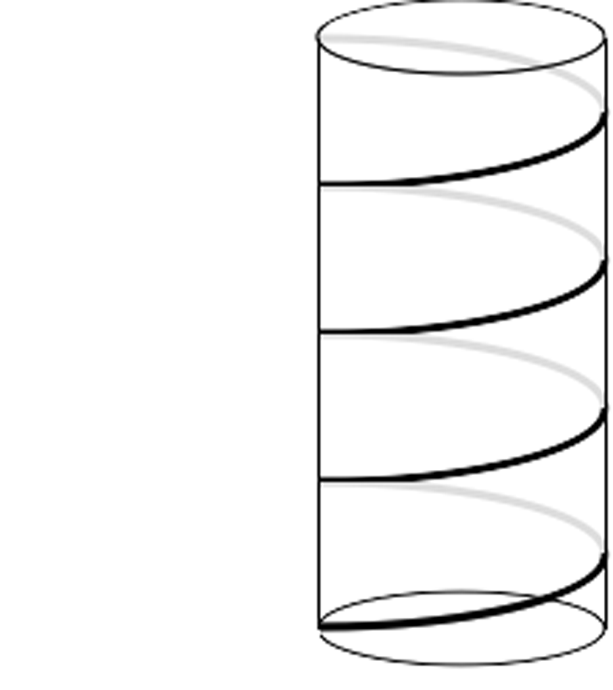

{% raw %}

<article>
  <section class="development">
    <div class="problem">
      <div class="problem-content">
        <p>Why are manhole covers circular, instead of square?</p>
      </div>
    </div>

    <p>You may have heard this “old chestnut” before. (If you have,
      don’t spoil it for everyone else!) If you haven’t, you
      may not have any idea how to even begin to think about
      the problem. Since this is a question about shapes, it
      may help to draw a picture. Better yet, you could build
      a model of the situation using, say, a cylindrical oatmeal
      box and a more rectangular box of cocoa powder. Now that
      you have a model, play around with it. Look at it from
      all different angles. Try placing the covers on the different
      “manholes.” Do you notice anything?</p>

    <p>There are many ways to <em class="vocab">visualize</em> in
      solving a problem. Sometimes visualizing can be as simple
      as plotting several points on a graph and interpreting
      what you see. Visualizing can also involve <em>altering</em>
      or <em>adding to</em> a given picture to make the problem
      easier.</p>

    <div class="problem new-page">
      <div class="problem-content">
        <p>How many square units are enclosed by the polygon DANCE
          below?
        </p>
        <figure class="fig-50">
          
        </figure>

      </div>
    </div>

    <p>You may have divided the figure in the previous problem into
      triangles, or even “boxed it in” and found the area of
      the rectangles you’d created. Either way, the way you reconceived
      the diagram made it much easier to solve.</p>

  </section>
  <section class="problems">
    <p>In the problems that follow, one of two strategies will help
      you: 1) Draw or build a model of the situation to make
      it easier to understand. 2) Alter an existing diagram in
      some way to gain more information, or simply to help you
      look at the diagram in a different way.</p>

    <div class="problem">
      <p>Below is the usual arrangement of 10 bowling pins, with
        the “single pin” at the bottom. By moving only 3 of the
        pins, can you “flip” the arrangement 180 degrees so that
        the single pin is now at the top?</p>
      <figure>
        
      </figure>
    </div>

    <div class="problem">
      <p>Alice and Bruno work in a city where the streets are laid
        out in a grid pattern. City Hall is at (0,0). Alice and
        Bruno work at (–3,–1) and (3,3) respectively. They wish
        to find an apartment at a point C such that the sum of
        the distances each of them has to walk to work is a minimum.
        Of course, Alice and Bruno can’t walk “as the crow flies”
        — there are buildings in the way. So what they really
        mean when they talk about distance is the number of blocks
        they’d have to walk if they always stay on the sidewalk.
      </p>

      <p>At what place or places could point C be located to satisfy
        their requirements?</p>
    </div>

    <div class="problem">
      <p>A <em class="vocab">lattice point</em> is defined as a
        point with integer coordinates. If $(-3, 5)$ and $(2,
        1)$ are two points on a line, find three other lattice
        points on the same line.</p>
    </div>

    <div class="problem">
      <p>Thomas is watching a train go by. In front of two train
        cars, there are two train cars. Behind two train cars,
        there are two train cars. And between two train cars,
        there are exactly two train cars. What is the minimum
        number of cars this train could have?</p>
    </div>

    <div class="problem">
      <p>Below is a number line. You can show that 5+3=8 by starting
        on the number 5, moving to the right three spaces, and
        landing on the number 8.</p>
      <figure>
        
      </figure>

      <p class="problem-part" data-part="a">. Use the number line to show that $5-3=2$.
      </p>

      <p class="problem-part" data-part="b">. Use the number line to find $-4+(-5)$.
      </p>

      <p class="problem-part" data-part="c">. Use the number line to find $3-(-2)$.
      </p>
    </div>

    <div class="problem">
      <p>Is it possible to fill a 10” cube with little drawers each
        5” by 2.5” by 1”?</p>
    </div>

    <div class="problem">
      <p>How many times might a square and a circle intersect? How
        about a rectangle and a circle? A rectangle and a square?
      </p>
    </div>

    <div class="problem">
      <p>There is a theorem in mathematics that states, “The sum
        of any two sides of a triangle is greater than the third
        side.” Why would anyone believe that “has to be”?</p>
    </div>

    <div class="problem">
      <p>Lawrence and Erika find a treasure map that tells them
        where precisely to begin in their search for booty, but
        then unfortunately it lists 5 directions and says to
        “follow them in whatever order will get you furthest
        from your starting position”. Here are the directions:</p>

      <ul>
        <li>10 Miles North</li>
        <li>30 Miles East</li>
        <li>$20\sqrt 2 $ Miles Northeast (that is, 45 degrees off
          from</li>
        <li>North and East)</li>
        <li>$30\sqrt 2 $ Miles Northwest</li>
        <li>$10\sqrt 2 $ Miles Southeast</li>
      </ul>

      <p>What order should they take to get as far as possible from
        their starting position?</p>
    </div>

    <div class="problem">
      <p>You may already be familiar with Venn diagrams, which provide
        a useful way to organize information. Use a Venn diagram
        to solve the following problem:</p>

      <p> Of 200 children attending a May Day celebration, 74 had
        their face painted, 125 got a balloon, and 23 had their
        face painted <em>and</em> got a balloon. How many children
        did not get their face painted or receive a balloon?</p>
    </div>

    <div class="problem">
      <p>Let’s try a more interesting one. The following data were
        obtained about 400 people who attended the premiere of
        “The Hair Witch Project”.</p>

      <ul>
        <li>150 students bought popcorn.</li>
        <li>250 students bought a soft drink.</li>
        <li>200 students bought candy.</li>
        <li>120 students bought popcorn and a</li>
        <li>soft drink.</li>
        <li>100 students bought popcorn and candy.</li>
        <li>130 students bought a soft drink</li>
        <li>and candy.</li>
        <li>80 students bought popcorn, a soft</li>
        <li>drink, and candy.</li>
      </ul>

      <p> How many students did not buy any of the three items?
      </p>
    </div>

    <div class="problem">
      <p>Let’s look at the exciting, dramatic adventures of a bobsledder.</p>

      <p class="problem-part" data-part="a">. A bobsledder starts a race by going 100 miles South.
        He then goes 100 miles East, and then 100 miles North
        to complete the race. Amazingly, the end of the race
        is at the exact same place as the start of the race!
        How is this possible?</p>

      <p class="problem-part" data-part="b">. Is the starting place you came up with in part a the
        only possible correct answer? Explain why or why not.</p>
    </div>

    <div class="problem">
      <p>You have an 8.5 by 11 inch piece of paper (standard size).
        Fold the paper in half so the top edge and the bottom
        edge meet, and then unfold it. Now you cut it along the
        diagonal of the entire sheet of paper, and keep one of
        the triangular pieces.</p>

      <p> What’s the area of the piece of the triangle that’s above
        the fold? What’s the area of the piece below the fold?</p>
    </div>

    <div class="problem">
      <p>Suppose you have three bricks and a ruler, but no calculator.
      </p>

      <p class="problem-part" data-part="a">. Find a way to measure the longest diagonal of the brick—the
        one that goes “inside” the brick to connect opposite
        corners. (Since you have no calculator, you won’t be
        able to use the Pythagorean Theorem.)</p>

      <p class="problem-part" data-part="b">. Now, suppose you stacked three bricks on top of each
        other. Can you find a way to measure the longest diagonal
        of the block this forms? (Still no calculator!)</p>
    </div>

    <div class="problem">
      <p>It is easy to cut a cylindrical piece of cheese into 4
        identical pieces with 2 straight cuts, and into 6 identical
        pieces with 3 straight cuts. One day, Mr. Trump decides
        to cut a cylindrical piece of cheese into 8 identical
        pieces, and unsurprisingly, it takes him 4 cuts.</p>

      <p> Rosie, his nemesis, claims she could have done it in only
        3 cuts! Was she telling the truth, or is she just trying
        to get Trump’s comb-over to stand on end?</p>
    </div>

    <div class="problem">
      <p>Can you determine a way to divide a square into 7 smaller
        squares that are not all the same size? How about 6 smaller
        squares?</p>
    </div>

    <div class="problem">
      <p>A power of two is a number like 4, which is $2^2$, or 64,
        which is $2^6$, or any other number that can be written
        in the form $2^n$. Can you find two powers of two that,
        when you add them together, give an answer that is also
        a power of two?</p>
    </div>

    <div class="problem">
      <p>Five kids are playing “eeny-meeny-miney-moe.” They play
        the game by going around a circle and pointing at each
        kid in turn on each beat of the chant. The chant has
        sixteen beats. The kid they point to on the last syllable
        of the chant is “out.”</p>

      <p class="problem-part" data-part="a">. If kid #1 is the kid they point to first, which kid will
        be out?</p>

      <p class="problem-part" data-part="b">. What about a game with fifteen syllables and four kids?</p>

      <p class="problem-part" data-part="c">. What about a game with twenty syllables and three kids?</p>

      <p class="problem-part" data-part="d">. What about a game with a hundred syllables and seven
        kids?</p>
    </div>

    <div class="problem">
      <p>In middle school, you probably learned how to represent
        fractions as “pieces of pie.” Below are representations
        of the fractions 1/3 and 2/5.
      </p>

      <figure>
        
      </figure>

      <p class="problem-part" data-part="a">. Draw “pieces of pie” to illustrate that $\frac{1}{3}
        + \frac{1}{3} = \frac{2}{3}$.</p>

      <p class="problem-part" data-part="b">. Draw “pieces of pie” to illustrate that $\frac{1}{2}
        + \frac{1}{4} = \frac{3}{4}$</p>

      <p class="problem-part" data-part="c">. Draw “pieces of pie” to illustrate that $\frac{1}{2}
        + \frac{1}{3} = \frac{5}{6}$. (First think about how
        you would represent “finding a common denominator.”)
      </p>
    </div>

    <div class="problem">
      <p>A store manager wants to decide whether to break down boxes
        measuring $3' \times 4' \times 4'$ or use them for shipping
        ski equipment. Can a set of $6'$ skis fit into those
        boxes? Why?</p>
    </div>

    <div class="problem">
      <p>A circle of radius 1 rolls inside a circle of radius 2.
        Describe the path traced by a piece of gum stuck to the
        rim of the inner wheel. (Make a model!)</p>
    </div>

    <div class="problem">
      <p>Shelly buys a new fishing rod and then prepares to take
        the bus home. When she tries to get on the bus, the driver
        says, “no way can you take that fishing rod on the bus
        — it’s five feet long, and we don’t allow any objects
        longer than four feet on this bus! Without the bus, Shelly
        is stranded, so she goes back to the store to return
        the rod. However, the clerk tells her that the rod is
        nonreturnable. In a flash of insight, Shelly comes up
        with a plan. She asks the clerk for a specific object,
        which he gives her, and sure enough, she is allowed on
        the next bus. Shelly’s plan didn’t involve breaking any
        laws, and it didn’t involve changing the rod in any way,
        certainly not by cutting or bending it, either! What
        was her plan?</p>
    </div>

    <div class="problem">
      <p>The cylinder below has a spiral drawn on it. The spiral
        loops around the cylinder exactly four times.</p>

      <figure class="fig-50" style="margin-left: 0;">
      </figure>

      <p> You measure the cylinder and find that it is 10 inches
        tall and 4 inches across. Then, to measure the length
        of the spiral, you cut up along the left side of the
        cylinder (imagine that it’s hollow, like the cardboard
        from a roll of toilet paper). Draw what the spiral would
        look like once you cut open the cylinder and flattened
        it into a rectangle — you can try this with an actual
        toilet paper roll or something similar.</p>

      <p class="problem-part" data-part="a">. How tall would the rectangle be?
      </p>

      <p class="problem-part" data-part="b">. How wide?</p>

      <p class="problem-part" data-part="c">. Use this information and your drawing to figure out the
        total length of the spiral.</p>
    </div>
  </section>
</article>

{% endraw %}
